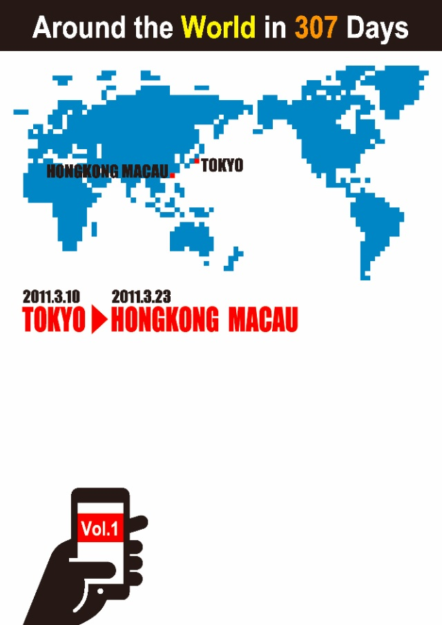

| 世界一周307日【Vol.1：香港・マカオ編】 | |
| 真名哲也 | |
| Synapse Publishing (2013) | |
真名哲也
2011年3月10日。ひとりの旅行作家が全く新しいシステムによる世界一周の旅をスタートさせた。
巡る先はアジア、ヨーロッパ、アフリカ、北米、南米、オセアニアの世界６大陸。
「SUGO6」と名付けられた旅はトラベル系ベンチャー企業のPASSPOT社が提供するユニークなプロジェクトで、その名のとおりスゴロクゲームを楽しむように旅行者個々がサイコロの目に応じて世界各都市を転々と旅していく。
参加者には専用アプリケーションにアクセスする権利が与えられ、様々なトラベルガイドやアシスタントプログラムをスマートフォンやパソコン経由で利用することができる。また、PASSPOT社は同社が構築した世代やエリアを超えたソーシャルネットワークを利用することで、海外における旅人同士のコミュニケーション活動も可能にしている。
そんな「SUGO6」の魅力を広く紹介する役割を担って旅に出たのが旅行作家の真名哲也。"旅を人生の住処"に各地を旅してきた彼がfacebookを使って世界一周の軌跡をライブにレポートする。
真名哲也が訪れる国と都市はどこか？そこで見るもの、出会う人は？...
Vol.1 は日本を出発して最初の訪問地香港・マカオをレポートするアジア大陸-Part1-。
※このコンテンツは2011年3月10日からfacebookで配信されたネット小説を改題し、一部修正加筆したものです。（原題「SUGO6」世界一周／真名哲也の旅）
※この物語はフィクションであり登場人物や組織名には架空のものが含まれますが、背景に流れる時間と史実は現実の世界を反映しています。

1：日本／東京
2：韓国／ソウル
3：中国／北京
4：中国／上海
5：台湾／台北
6：中国／香港
7：フィリピン／マニラ
8：マレーシア／コタキナバル
9：インドネシア／バリ
10：インドネシア／ジャカルタ
11：シンガポール／シンガポール
12：マレーシア／クアラルンプール
13：ベトナム／ホーチミン
14：ベトナム／ハノイ
15：ラオス／ルアンパバーン
16：カンボジア／プノンペン
17：カンボジア／シェムリアップ
18：タイ／バンコク
19：ミャンマー／ヤンゴン
20：ネパール／カトマンズ
21：スリランカ／コロンボ
22：インド／バンガロール
23：インド／デリー
24：ウズベキスタン／タシケント
25：UAE／ドバイ
26：トルコ／アンカラ
27：トルコ／イスタンブール
28：エジプト／ルクソール
29：ケニア／ナイロビ
30：南アフリカ共和国／ヨハネスブルグ
31：モロッコ／カサブランカ
32：ポルトガル／リスボン
33：スペイン／バルセロナ
34：イタリア／ローマ
35：スイス／ジュネーブ
36：フランス／パリ
37：ドイツ／ベルリン
38：ポーランド ／ワルシャワ
39：フィンランド／ヘルシンキ
40：スウェーデン／ストックホルム
41：ノルウェー／オスロ
42：イギリス／ロンドン
43：アメリカ／ニューヨーク
44：アメリカ／マイアミ
45：アメリカ／ダラス
46：カナダ／バンクーバー
47：アメリカ／ロスアンゼルス
48：グアテマラ／グアテマラシティ
49：ペルー／リマ
50：ボリビア／ラパス
51：ブラジル／リオデジャネイロ
52：アルゼンチン／ブエノスアイレス
53：チリ／イースター島
54：仏領ポリネシア／パペーテ
55：ニュージーランド／オークランド
56：ニュージーランド／クライストチャーチ
57：オーストラリア／メルボルン
58：オーストラリア／シドニー
59：オーストラリア／ブリスベン
60：オーストラリア／ケアンズ
※１〜６０が訪問候補地としてルート計画された都市で、実際に訪れた都市が赤文字になっています。
世界一周の旅に出かけませんか？
そんな誘いをPASSPOT社の幹部から受けたのが僅か２ヶ月前。
そして今日、僕はその旅をスタートさせ、最初の訪問地である香港に到着した。
キャセイパシフィック航空CX543便（10:45羽田発→15:00香港着）。
香港国際空港でイミグレーションを終えた僕はWiFiゾーンに移動しiPhoneのスイッチを入れると「SUGO6」アプリを立ち上げ「check in!」アイコンをタップ。
緯度経度を示すジオタグ情報が一瞬表示された後、Googleマップ連動地図上の香港の場所に「mana」の文字が点滅しチェックイン完了。
続けて１件のメッセージ受信を知らせる画面下部の「message」アイコンをタップすると、こんなメールが届いていた。
>>>>>message／2011.3.10 - 15:30<<<<<
真名哲也さま
香港までのフライトお疲れさまです。
無事のご到着確認させていただきました
世界一周の旅、最初の訪問地香港のステイ１４日間をお楽しみください。
空港から中心市街地までは約３０kmありますが、エアポートエクスプレスに乗れば２５分で到着します。
宿泊はご希望の「THE PENINSULA HONG KONG」で予約が完了しておりますのでフロントにてパスポートをご提示ください。
ホテルご到着後も「check in!」アイコンをタップいただきますと、周辺のお薦め観光スポットやレストランなどの情報をご覧いただけます。
また、今後のスケジュールや連絡事項に関しましては「message」部に赤文字で件数が表示されますので随時内容をご確認ください。
>>>>>SUGO6 Support Desk<<<<<
それから約９０分。
ペニンシュラホテルに到着した僕は、チェックインを済ませるとハイティで有名な１階のラウンジに降りてカプチーノを注文し、MacBookAirでfacebookにアクセスして、このnoteを入力している。
簡単に自己紹介をしておこう。
僕の名前は真名哲也。
職業は旅行作家（トラベルライター）で、世界各地を転々と旅しながら様々なメディアにテキストを提供する仕事をかれこれ２０年以上続けている。
クライアントは旅行雑誌社であったり、映像ドキュメンタリーの制作会社であったり、時には政府機関からの依頼で調査レポートを作成したりするのだが、２１世紀の到来と前後してインターネット関連のビジネスが増え、今では各種WEB向けの仕事のほうが多くなっている。
「旅を人生の住処にする」といってもいい旅行作家にとって、インターネットやモバイル環境の進化は極めて強力なフォローウィンドとなった。
何せ「空気を売っている」と喩えられるほど身軽な職業だから、その身ひとつで現場へ旅立ち、五感で得た体験とそこから沸き出す思いをこのようにキーボードでコトバに変換してファイル化し、ネット上にアップロードすれば仕事はほぼ完結する。
以前なら「打ち合わせ」と言う面倒な作業のために余分な移動を繰り返すことも多かったが、今はSkypeやFaceTimeを使って現場を離れることなく効率よく仕事を進めることができる。
その自由自在さにおいて旅行作家ほど高度情報ネットワーク社会に適した職業はない、というのが長らくこの仕事を続けてきた僕の実感だ。
そして、そんな僕に突如舞い込んできた今回の仕事が「SUGO6」のルポである。
PASSPOT社という若きベンチャー企業からのオファーはシンプルで「弊社が昨年スタートさせた"SUGO6"という富裕層向けの世界一周旅行企画を実際に体験しながらその詳細と魅力をfacebookページにルポルタージュとしてアップし続けてほしい」というもの。
２０１１年が明けた１月１３日に同社の幹部３人と会ってプロジェクトの詳細を聞いた僕はそのビジネスモデルに共感し、二つ返事で仕事を引き受け、その後数回のミーティングを経て今日の出発に至ったのである。
と、入力してはみたが、今、何かのきかっけでこのfacebookページにアクセスし、このnoteをここまで読み進めてきた"あなた"には、これだけでは意味や背景がよくつかめないだろう。
無理もない。今日スタートするこのブログ形式のルポは、これから僕が重ねる10ヶ月の予定の長旅の記録であると同時に、「SUGO6」というこれまでにない斬新かつユニークな旅行企画のライブレポートになるわけだが、当事者である僕でさえ、その具体的な中身はこれからの日々で順に知ることになるし、ひとまず落ち着いた香港で２週間を過ごした後、どこへ行くのかもまだ決まっていないという成り行き任せの旅なのだ。
ということで、この風変わりな世界一周旅行に少しでも興味を持ってくれた方は「いいね！」ボタンをクリックして読者登録の上、僕の旅をfacebookでチェックし続けてほしい。
日本には「袖振り合うも多生の縁」なる故事がある。
見知らぬ人と道で袖をすり合せるのも前世からの深い縁によるものだという仏教の教えだが、ネット上での出会いもまた然り。
中国、インドという仏教ゆかりの２大国家に続く６億人超の人口を持つfacebookという"空想"の国にて、不思議な引力に導かれての"僕"と"あなた"の出会いである。
これも何かの縁ということで、旅を共に楽しんでもらえれば幸いだ。
facebookを使うが故に、僕のレポートにコメントをもらうことも可能だし、"あなた"も旅人であれば、場合によっては世界のどこかで僕たちは実際に会うことがあるかもしれない。
いや、そのうち"あなた"も「SUGO6」で世界一周の旅に出かけるかも...、と思いを巡らせばPASSPOT社が僕に依頼したルポの狙いが見えてくるような気もする。
ひとまず今日はこのあたりにして、続きは後日アップすることにする。
このあとは「SUGO6」アプリの検索で香港ヌードルの美味しい店でも見つけて、久しぶりの九龍の街へ出かけるつもりだ。
旅に出た翌日の昨日、香港市内を歩いていた僕のiPhoneに日本から大地震のNEWSが飛び込んできた。
ホテルに戻ってPCを立ち上げると次々とアップされる被害状況と悲惨な映像。
１９９５年に阪神淡路大震災で被災生活を余儀なくされた僕には否応なく当時の記憶が蘇り、何ともいたたまれない気持ちになった。
不幸にも命を落とされた方々のご冥福と、今なお身の安全を脅かされている人々の一刻も早い安堵を祈るばかりである。
さて、事態を受けてのPASSPOT社の対応は早く、以下の第一報が「SUGO6」アプリの「message」を通じて即刻届いた。
>>>>>message／2011.3.11 - 15:20<<<<<
《緊急連絡》
「SUGO6」ご参加の皆様
１４時４６分、東北地方を震源地とする大きな地震が発生し、太平洋側の広域で津波の被害が出ている模様です。
弊社にて最新情報を確認の上、随時ご連絡させていただきますので本アプリの更新情報をチェックください。
また、この地震を受けて緊急帰国をご希望される方々への航空券手配やその他サービスに関しましては、弊社にて最大限の努力を行い、少しでも早期の帰国実現に向けたサポートをさせていただきますのでご連絡ください。
>>>>>SUGO6 Support Desk<<<<<
僕自身「果たしてこの旅を続けるべきか否か？」との思いが瞬時に湧いたが、各所にメールで連絡を入れたところプライベート周辺で被害を受けた者はおらず、また「この時点で帰国したところで自分に何ができるというのか」との思いもある。
PASSPOT社のスタッフによると、現在「SUGO6」の旅に参加している方々が世界中に３２人いるという。その中には緊急帰国を急ぐ方がおられるかもしれないので、PASSPOT社サポートデスクにはそちらに注力してもらうのが筋だと思い、ひとまずは香港にとどまり状況を見ることにした。
それよりも、この一大事に勇気づけられたのは外地にいる僕への周囲からの暖かいコトバである。
滞在するペニンシュラホテルでは、昨夜から今までの間に何人ものホテルスタッフや滞在するツーリストが日本人である僕に向けて励ましの声をかけてくれたし、facebookを通じて世界中の友人から安否を気遣うメッセージが届いた。
世界は"繋がり"の中に結ばれてある。
人の力で避けられぬ悲しい事態が起こったとしても、互いを思いやる気持ちの連鎖の中に前に進む"希望の光"を見いだすことができる。
facebookをチェックするだけでも既に災害情報や支援活動のページが次々と立ち上がり、ボランティアやドネーションを通じた"強い市民社会の風"がネットワーク上に拡大している。
遠く離れた異国の地にいても、ネットワークという"もうひとつの"社会に属することで出来ることはあるはずだ。
旅する僕の心境は、スタート直後にして想定範囲外のものとなったが「自らが為すべきは何なのか」を日本から離れたここ香港でじっくりと考えてみるのも悪くないと思う。
そういえば、PASSPOT社が「SUGO6」の参加者向けに事前配布するPDFドキュメントの中にこんな表記があった。
=================================
「SUGO6」の旅は原則的に「独り旅」であり、従来の旅行業界においては「個人旅行」のカテゴリーに属するものになりますが、弊社ではあえてこのサービスを「ネットワーク旅行」と定義させていただいいております。
なぜなら「SUGO6」は独りで旅しながらも、その先々で生まれる「見知らぬ誰か」との出会いの数々こそが最良の観光素材だと考えているからです。
つまり「世界一周」という空間的ネットワークの中に、国境を越えた「友の輪」というもうひとつのネットワークを構築いただき「決して独りではない」人生をお楽しみいただくことこそが私どもの願いなのです。
==================================
改めてこの文章を読み返してみると、むしろこの旅を続け「友の輪」の価値を探ることが自らに課せられた使命なのではないか？と思えるのだが...
"現場"のリアリティとは、結局"現場"にいる者のものでしかない。
ここ香港でもインターネットにアクセスすれば地震被災地の映像が次々とアップされるから事態の深刻さや今後の不安は日本にいる人々とかなり近いレベルで共有できるような気がする。
問題は、そこに生まれる無力感なのだ。
誰かがtwitterでつぶやいていた。
「テレビをつければ、どのチャンネルも悲惨な映像が繰り返されるばかり。私たちはどうすればいの？」
そう、天災という極めて強力で容赦なき圧力の前で小さな僕たちにできることは少ない。
素人が"現場"に近づくことはできないから、悲しむ人の肩をそっとたたいて慰めのコトバをかけることも、空腹に耐える人に身辺に有り余っている食料を即座に差し出すこともできない。
ヘリコプターからの中継で映されたひとりの老人の表情が頭から離れない。
津波から逃げて屋根に昇り、ひとまずの難を逃れたものの救助を待ち続ける寂しそうな姿。
マスメディアを通じてその姿を見た何十万、何百万の人々の心に浮かぶ思いは「早く救助してあげて」「お気の毒に」「がんばって」...
でも、それらをどれだけ集めても、お茶の間という安全な"現場"の声でしかないから無力感を伴うのだ。
"現場"とは何か？
僕は、テレビに映し出されたあの老人のうつろな眼差しの側から見える光景を想像する。
そこにあるのは壊滅的な町並みではなく、見慣れた白い雲が浮かぶ空だ。
長く暮らした家屋を、淡々と営んできた商店を、いや場合によっては愛する家族を亡くしたかもしれない老人が途方に暮れて屋根から見上げる空は無情なまでに青く、そこに何台ものヘリが爆音をたてて飛んでいる。
そして、その脳裏に浮かぶ思いとは？
ここで僕の想像力はストップし、思考は振り出しに戻る。
結局、"現場"のリアリティとは、結局"現場"にいる者のものでしかないのだ。
一方で"希望の光"も見えてきた。
世界がひとつに繋がった今、グローバル社会の反応は速かった。
米国は強力な空母「ロナルド・レーガン」を支援活動に派遣。
２００８年に四川大地震を体験した中国や、先日不幸な震災があったばかりのニュージーランドからも支援表明。
北方領土問題でぎくしゃくしていたロシアからは発電用天然ガス提供の申し出、等々。
おそらく世界が争いにあけくれた２０世紀なら、こういった動きは不可能だっただろう。
２１世紀の今、様々な課題をかかえながらも国家レベルの「友の輪」は確実に存在し、こういった機会を通じて強くなっていくのだと信じたい、
もうひとつの"希望の光"はソーシャルネットワーク。
その使命として震災の模様と対応を国民に発信し続けるマスメディアと並行してfacebookやtwitterなどのソーシャルメディアは瞬時にして"個"の思いを繋ぎ、その連鎖を勢いよく拡大させている。
外地にいる僕も、友の呼びかけに応じてオンライン募金活動に参加したばかりだが、情報のみならずささやかながらも具体的なアクションを起こせるところに"個"が主役のソーシャルメディアの真価が見える。
億単位の人が暮らす"国境なき"ヴァーチャル国家がソーシャルネットワークであるならば、そこに生まれる「善意の輪」は現実の国家間の絆をも補強するパワーを持つはずだ。
さて、僕は「SUGO6」の旅を続けることにした。
僕の"現場"は"旅"であり、なすべきはそこから広くコトバを発し続けることだとの思いを新たにしたからである。
また、奇しくも世界の"繋がり"を意識せざるを得ないこの時に「世界一周」の旅に導かれた"縁"も感じている。
香港湾を目の前に、今キーボードを打つ僕が見上げる空も青い。
が、世界をひとつに繋ぐこの同じ空を悲観とともに見上げる数多くの人がいることを心に刻んで旅を続けることにする。
「旅は双六ゲームのごときものにして、スタートから始まりゴールで終わる一本の道筋でありながら、そこにひとつとして同じシナリオは存在せず、人は"縁"や"運"というダイスの目にも似た外力に翻弄される道程を悲喜こもごもの中に味わうのである」
PASSPOT社が提供する「SUGO6」という全く新しい旅行企画の基本コンセプトを僕なりに表現するとこうなる。
旅慣れた人、旅好きの人なら共感してもらえると思うが、あまりにも計画的な旅は退屈なものである。
「日常から飛び出して見知らぬ土地を見て歩く」という旅は、その成り立ち自体が冒険や探検の類いであり、他者によって組み立てられた行程をトレースするパッケージ旅行的な商品は旅本来の魅力に逆行しているといっていい。
ひとり旅も同様で、旅する先の歴史や文化に関する入念な事前学習や情報収集という準備はおおいに行うべきだが、そこで得る体験レベルまで踏み込んでまで事前に細かく計画する必要はない。
そう、"行為の計画"ではなく"心の準備"。
それさえあれば、旅は「行き当たりばったり」でいいのだ。
実はこのスタンスは"人生"にも通じている。
「旅は双六ゲームのごときものにして...」と定義したが、これを「人生は双六ゲームのごときものにして...」と置き換えてもらえばわかるだろう。
僕が今回、PASSPOT社の依頼を受けて「世界一周」の旅に出かけることにしたのは、１月に出会った同社の幹部たちが若き経営者でありながら明確にこのスタンスを有していたからである。
同社を設立した３人はまだ２０代半ばの若者だが、学生時代にバックパッカーとして世界一周の旅をしている最中に出会ったのが縁で起業したという。
彼らがプロデュースする旅なら楽しいものに違いないと期待して参加したわけだが、地球を舞台とした壮大な双六ゲームのごとき「SUGO6」は面白いだけでなく極めて洗練されたプロジェクトとなっているので、その仕組みを３つのポイントで簡単に解説しておこう。
（１）ルート設定
「世界一周」ルートは、参加者の希望をもとにPASSPOT社のスタッフが設定する。希望といっても「期間（３ヶ月以上１年以内）」「予算（上限なし）」「志向（歴史、自然、文化など）」に関わる大枠部分の確認があるだけで、具体的な訪問地の希望も一定数に限られ、あとは周遊性やアクセス性を加味して組み立てられたルートが出発２週間前に提示される。
※僕のルートは期間が１０ヶ月間、予算は５００万円。志向的には世界的な歴史・自然遺産を訪ねるテーマで合計６０都市を巡るルートが設定された。もちろんそれら全ての都市を巡るのではなく、以下に紹介する「dice」によって訪問地は順に決定する。
（２）「SUGO6」アプリ
既に［note1］で一部の機能を紹介したが、参加者個々に対して「SUGO6」アプリのアカウントが発行される。
インターネットでアクセスする管理画面ではルートや予算の執行状況などが確認でき、モバイル版アプリには「check in!」や「message」の他、「secretary」や「friends」「dice」などのアイコンボタンが配置され、各種サービスを利用できる。
※僕自身、まだ使いこなしていないので各サービス内容は今後順に体験とともにレポートする。
（３）Dice Roll
「世界一周」の旅程を決定する最大のポイントとなるのがモバイル端末上で定期的に行う「Dice Roll」。モバイル画面上の「dice」アプリで振るダイスの出目に応じて次なる訪問地とその後の行動が表示される。
「SUGO6」は訪問する都市ごとにじっくりと時間をかけて旅を楽しんでもらうために一都市の滞在日数が最短でも１週間設定されることになっている。
そこで次の移動日から起算して５〜７日前に「Dice Roll」が通知される。
ちなみに僕の最初の「Dice Roll」は日本を出る前の３月３日だった。
ルートは【東京→ソウル→北京→上海→台北→香港→マニラ→】となっていたが「５」の目が出て以下のメッセージと共に最初の訪問地が香港に決定した。
>>>>> Dice Roll ①／2011.3.3 - 20:00<<<<<
Tokyo → Hong Kong
【香港 Hong Kong】
最初の訪問地・香港。
3/23まで２週間滞在し「世界一周」の旅に向けて気持ちの整理をすると同時に「SUGO6」アプリの利用方法を学ぶ。
>>>>>SUGO6 Support Desk<<<<<
香港は過去に２回来たことがあるので、出来れば最初のダイスの目は「２」か「４」で、まだ訪れたことがない北京か台北に行きたかったのだが、これが運命をダイスに任せるといってもいい「SUGO6」の旅の面白いところでもある。
実は僕にとって初の海外旅行は１９８５年の香港だった。
今日で滞在も１週間になるが、世界を夢見ていた若い頃に戻って「気持ちを整理する」のも悪くないものだ。
旅人としての半生を自らの中で整理しながら香港の日々を重ねている。
さて、実は今日が２回目の「Dice Roll」デーになっている。
通知は夜に来るので今日中に次の訪問地が決定するはずだ。
今後のルートは【→マニラ→コタキナバル→バリ→ジャカルタ→シンガポール→クアラルンプール】となっているから、何れかの都市へ旅はつながるので、次回以降で報告したい。
また、香港滞在の後半についてだが、明日から足を延ばしてマカオへ行くことにした。
「friends」アプリを使うので、旅は新たな展開となりそうだ。
マカオに来て４日目。
前回、僕にとって最初の海外旅行が１９８５年の香港だったことにふれたが、その時に日帰りオプションで一度だけマカオを訪れたことがある。
当時、アジアでは珍しいカジノの街に「東洋のラスベガス」などのキャッチフレーズが付けられていたから、きらびやかな観光地を期待して訪れたものの、砂塵が舞う殺伐とした風景の中に建つカジノの館群と歴史的建造物の周囲に群がる物乞いの執拗な懇願にカルチャーショックを覚え、あまりいい印象を持たずに離れた覚えがある。
が、四半世紀の時とはかくも街を変貌させるものなのだ。
２００６年にカジノの総収益が本場ラスベガスを抜き世界一位となったマカオは高級ホテルの開業や巨大プロジェクトが相次ぎ、年間４０万人強の日本人ツーリストが訪れるまでになった。
そんなマカオを再訪した僕を魅了したのが「東洋と西洋の出会いの街」として整備されたマカオ歴史市街地区である。
２００５年に２２の歴史的建造物と８カ所の広場をつなぐエリアがユネスコ世界遺産に登録された同地区は歩けば歩くほどに様々な発見があり、あたかも「街ごと博物館」なのだ。
そんなマカオの街歩きを、一昨日からは若い女性と一緒に楽しんだ。
と、いきなり記すと「なぜ富裕層の一人旅であるSUGO6に若い女性が登場するの？」と質問が飛んできそうだが、そこがPASSPOT社の仕掛けるマーケティング戦略の重要なポイントとなっているので紹介しておこう。
一昨日の午後２時。
マカオ観光のシンボルといってもいい「聖ポール天主堂跡」の前でひとりの女性と待ち合わせた。
約束時間より１０分早く現地についた僕はiPhoneの「SUGO6」アプリに「check in!」し、表示されたマップ上「聖ポール天主堂跡」前に「mana」の文字が点滅しているのを確認すると、続けて「friends」アイコンをタップし、待ち合わせた女性の名前を選んで「先に到着」とショートメッセージを送る。
すると１０秒もかからずに、マップ上の少し離れたセナド広場あたりに相手の名前が点滅し「あと５分で到着します」のメッセージが返ってきた。
そして５分後。
天主堂跡前の階段に座ってくつろいでいた僕の前に笑顔の女性が登場し
「真名さんですよね！はじめまして」
と、むこうから僕を見つけて挨拶してくれた。
「よくこの人ごみの中で僕のことがわかったね？」
と問うと
「facebookにお顔が出てるし、iPhoneを手にされてたからすぐ分かりましたよ」と彼女。
確かにそうだ。
僕も手元で彼女のfacebookを確認すると、目の前と同じ笑顔が画面上に。
実名＆顔写真表示が前提のfacebookの価値を改めて実感することになる
「そこで美味しそうなエッグタルトを見つけたんで買ってきました」
僕の横に並んで座った彼女が小さな紙袋から取り出したのはマカオ名物のスイーツとペットボトルのアイスティー２本。
僕たちは自己紹介からはじまって互いの旅話に花を咲かせる午後の青空ティータイムを楽しんだ。
プライバシー上、彼女のことをイニシャルでＮＨさんとしておこう。
年齢は２１歳。東京の某大学生で１年間休学して２月に「世界一周」の旅をスタートさせた。
工学部の建築学科で建築史を専攻している彼女は設計家を目指しているが、その目で世界中の建築物を見てみたいとの思いでPASSPOT社のコンテストに応募し「ATJ」と呼ばれるプロジェクトのスタッフに採用されたという。
PASSPOT社のマーケティング戦略は面白い。
同社の経営陣が自らバックパッカーとして「世界一周」の旅を経験した面々であることは前回紹介したが、彼らは"志"の高い若者の旅を支援するサポートプログラム「ATJ」を「SUGO6」と連動させて展開している。
正式名称を「Ambitious Travelers Japan」という「ATJ」の概要はこうだ。
（１）コンテスト
PASSPOT社では学生向けの「世界一周」プランコンテストを定期的に行い、優秀な企画立案者をATJスタッフとして採用し、彼らに対して奨励金授与を行いっている。
（２）旅の特派員
「世界一周」に出かけるATJスタッフは、各々が企画した旅のテーマに沿って各国で学んだことをPASSPOT社の専用ブログにアップする特派員的な任務を担う。
（３）ATJアプリ
スタッフ個々に対して「ATJ」アプリのアカウントが発行され「check in!」や「message」の他、「secretary」や「friends」などの機能を利用できる。
※「SUGO6」アプリと共通の機能である
（４）「SUGO6」参加者によるサポート
ATJスタッフは「friends」機能を使って「世界一周」の旅に出ている「SUGO6」旅行の参加者と連絡をとることができ、外地におけるサポートを受けることができる。
つまり、PASSPOT社が提供する「世界一周」旅行には、富裕層が参加する「SUGO6」と、若者が参加する「ATJ」の２種があり、「SUGO6」の売り上げの一部が「ATJ」サポートの原資になると同時に、外地においてはPCやモバイル端末で利用できるアプリの「friends」機能によって相互サポートが可能となっているのである。
様々なテーマで世界中を旅する若者が日々更新し続けるブログは有益かつライブな情報源として富裕層が「SUGO6」アプリでエリアやテーマ別に検索できるデータベースとなるし、専門知識や人生経験が豊富な「SUGO6」参加者と出会うことで若者たちが得る情報や人的ネットワークも貴重なものでなる。
世代を越えた旅人同士のWin&Winの関係構築こそがPASSPOT社の狙いなのだ。
※具体的なビジネスモデルは次回レポートする。
そんな訳で僕とＮＨさんは互いの専門領域の知識を披露し合いながら、連日、歴史市街地区のスポットを順に巡った。
ポルトガル様式の教会や中国寺院の建物に関する彼女の解説は素人の僕にもわかりやすく、数多くの建造物を対比の中に見る楽しさを教えてもらえたし、僕が語る大航海時代の東西交流史や冒険家たちの物語を彼女もおおいに楽しんでくれたようだ。
互いが学芸員のごとく解説し合いながら巡ることで、マカオの街はまさに「街ごと博物館」となった。
さて、ＮＨさんは明日の午後マカオを離れインドシナ半島を南へ向けて旅を続けるらしい。
先ほど、若者の旅には少し贅沢なポルトガル料理の店でディナーをご馳走し、また世界のどこかで会おうと約束して別れた。
僕はあまりにもマカオが気に入ったので予定を延ばして明後日までマカオに滞在することにした。
あと２日あれば世界遺産の全てを踏破できそうだ。
２３日に香港に戻った後は、いよいよ「SUGO6」第２の訪問地へ移動することになるが、そこも次回にレポートしよう。
昨夜、マカオから香港に戻った。
明日「SUGO6」第２番目の訪問地へ向けて旅立つが、まずは既に１６日の段階で決定していた次なるデスティネーションについて報告しておこう。
この日「dice」アプリで出た目は「１」。
以下のメッセージが表示された。
>>>>> Dice Roll ②／2011.3.16 - 20:00<<<<<
Hong Kong → Manila
【マニラ Manila】
２番目の訪問地はフィリピンのマニラ。
3/30まで７日間滞在。スペイン統治時代の面影を残す城郭都市の歴史とフィリピン独立の英雄の軌跡を追う。
>>>>>SUGO6 Support Desk<<<<<
そして、翌日にフライトはキャセイパシフィック航空CX919便（14:40香港発→16:40マニラ着）、滞在先はマニラホテルが予約済とのメールが届いた。
フィリピンはセブ島やボラカイ島を訪れたことがあるが、首都であるマニラは空港を経由したのみで初めての訪問となる。
PASSPOT社からのミッションにあるようにフィリピンはスペインによって統治された歴史を持ち、「イントラムロス」という城郭都市跡には見どころが多いらしい。
旧イギリス領の香港、ポルトガル領のマカオの次は旧スペイン領、ということで僕の旅は「東洋と西洋の交差点」を渡り続ける歴史紀行が続く。
また、人物史が好きな僕の志向を知って担当スタッフが挙げてくれた"フィリピン独立の英雄"についてはプロフィール資料がPDFで届いたが、非常に興味深い人物である。"彼"については次回にレポートしたいと思う。
さて、今回はPASSPOT社がプロデュースする「SUGO6」のビジネスモデルをレポートすることになっていた。
これまでの連載で「SUGO6」という今までにないユニークな旅の仕組みについては大筋理解してもらえたと思うが、このプロジェクトに関する金銭面からビジネスの成り立ちを解説しておこう。
（１）会員組織
「SUGO6」に参加するツーリストは、まずPASSPOT社と以下の条件で会員契約を結ぶことになっている。
《入会金》１００万円
《年会費》１０万円
《資産》５０００万円以上の金融資産を有していること
《海外渡航歴》過去に１０回以上の海外旅行経験があること
「SUGO6」は旅慣れた富裕層をメインターゲットにしている。
世代的には団塊の世代より上の所得と時間にゆとりのある層がメインだが、登録会員には一部５０歳前後のエグゼクティブ層も含まれているらしい。
シニア富裕層を対象とした海外旅行ブランドであれば数多く存在するが、PASSPOT社のビジネスは"旅のステイタスクラブ"運営にあり、昨年のサービス開始以来、既に口コミで２００人以上の会員が存在するということなので、同社が創業１年目にして獲得した売り上げの規模は推定できる。
この会費は一般の人々からすれば高額に思われるかもしれないが、僕は的確な数字だと思う。
実は以前に豪華客船で世界を旅するシニア層を追うドキュメンタリー企画でステイタスにこだわる富裕層を数多く取材したことがあるのだが、その経験から考えると贅沢な旅の中にも知的冒険要素を組み込んだ「SUGO6」の魅力に共感する層であれば、この会員契約条件は問題なくクリアできるラインだと思う。
（２）トラベル情報業
PASSPOT社は旅行商品を造成する旅行代理店ではなく、「世界一周」の旅をサポートする情報事業を展開するIT企業である。
●航空会社
●ホテル
●各種オプションツアー
のブッキングに関しては外部提携各社とのネットワークを構築し、「SUGO6」アプリを通じた各社WEBサイトとのリンク部分でコミッションを発生させている。
つまり旅を構成する"パーツ"を売るのではなく、無数に存在するそれらの中から適正な情報を選択し提供するのがPASSPOT社のビジネスなのである。
そのために、会員に対しては「世界一周」ルートの設定段階から専属スタッフが付き、渡航中の会員を情報面で総合的にサポートするコンシェルジュ的役割を担っている。
（３）マイルチャージ
PASSPOT社は、そのコンセプトを「旅情代理店」としている。
※「旅行」ではなく「旅情」である。
パッケージ化された旅行商品を造成するのではなく、海外旅行というパーソナルな体験における「情報」と「情緒」を提供することを事業ミッションとしており、その対価を「マイルチャージ」として参加者から受け取ることにしている。
つまり、「SUGO6」の旅そのものが一種の知的エンターティンメント商品であるとの位置付けから、具体的には「世界一周」の旅に対して１マイルあたり１０円のチャージが請求される仕組みになっている。
※参考までに今回の僕のルートでは総移動マイルが５００００以内に収まる予定なのでマイルチャージは５０万円になる。
また、このチャージで集まった資金の一部が、前回紹介した若者向けプログラム「ATJ」のファンドとなっている。
以上のビジネスをわずか１０数人のスタッフで運用しているのが創業１年に満たないPASSPOT社なのである。
さて、次回はマニラからのレポートになる。
実は「SUGO6」というネーミングには、"双六"とは別に「６大陸を巡るスゴイ旅」というコンセプトがあるらしい。
アジア、ヨーロッパ、アフリカ、北米、南米、オセアニアの６地域が必ずルートに含まれるからだ。
だとすれば、１０ヶ月に及ぶこの旅は、たとえるなら"旅情代理店"のPASSPOT社と旅行作家・真名哲也のコラボレーションによる６章だての長編ストーリー。
そして、今日でその【第１章アジア編 第１節：香港】が終了ということになる。
アジア編がこの先第何節まであるかは不明だが、ストーリーテラーである僕自身が明日から始まる第２節を前に先行きの見えない展開にわくわくしている。
おそらく、このペースでいけば連載は１００回前後になるだろう。
物語はプロローグから本編へ入る、といった感じだ。旅を前に進めよう。
▶▶▶ Vol2.：フィリピン〜シンガポール編に続く
世界一周307日【香港・マカオ編】
真名哲也 Tetsuya Mana
2013年6月1日発行
Producer＆Editor ： 江藤誠晃 Tomoaki Eto
制作著作 ： 株式会社TQ
発行 ： Synapse Publishing(株式会社モバキッズ)
お問い合わせ先：info@synapse.am
本作品の詳細についてはTRAVEL MAKERSのWEBサイトをご覧ください。
http://www.travelmakers.org/books/
本書の無断複製、複写、転載を禁じます。
© Tomoaki Eto